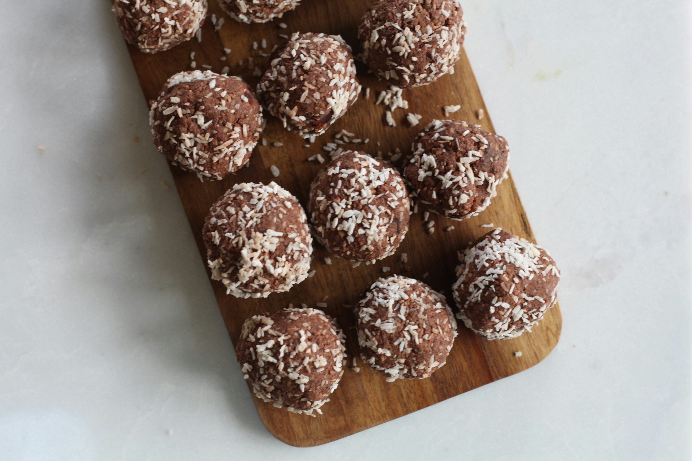

Return to Homepage
Easy Energy Balls
Original recipe here

Description
My friend showed me this recipe and I'm obsessed with them. These are quick easy to make, and they are delicious!
Ingredients
- 1 Cup Instant Oats
- 2/3 Cup Flaked Coconut
- 1/2 Cup Peanut Butter
- 1/2 Cup Flax Seeds
- 1/2 Cup Chocolate Chips
- 1/4 Cup Honey
Steps
- Stir oats, coconut, peanut butter, flax seeds, chocolate chips, and honey together in a large bowl until well-combined. Roll into golf ball-size balls.
- That's it! Serve chilled, if desired.